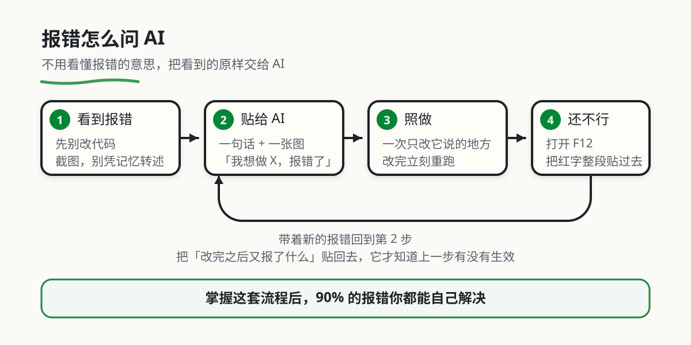

常见问题与排错
本章目录 · 6 节
本章导读
在 AI 时代，排查错误的方式已经变了。
AI 可以帮助你读懂报错、提出修复办法。你要做的是提供证据，并确认修改是否真的有效；不必先背熟所有错误类型。
本章从描述现象开始，再用浏览器的 Console 和 Network 补充信息。每次只验证一个猜测，最后按原来的操作复测。

1. 核心心法：截图问 AI
截图能帮助描述页面，但错误原文、触发步骤和最近的改动通常更利于定位。看不懂报错时，可以让 AI 解释其中的文件名、行号和关键字段。
重现问题 → 记录预期与实际结果 → 请 AI 提一个原因 → 只改一处 → 原步骤复测
例如“保存失败”可能来自空输入、登录过期或服务器错误。先看请求状态与返回内容，再决定改哪一处。理解这个区别，比连续尝试多个修复建议更有用。
1.1 最简单的提问方式
不需要复杂的模板，两种方式任选：
方式一：描述现象
格式：刚才做了什么，现在出现了什么
刚才我修改了登录页面的代码，现在页面白屏了，怎么办？
方式二：截图
[截图]
这个报错怎么解决？
最好的方式：描述 + 截图
刚才我修改了登录页面的代码，现在页面白屏了。
[截图]
怎么办？
记住：描述清楚上下文，加上截图，AI 能更快帮你解决问题。
1.2 如何把问题讲清楚
很多初学者知道要提问，但不知道怎么说。其实只需要讲清楚三件事：
1. 刚才做了什么
刚才我点击了保存按钮
刚才我修改了登录页面的代码
刚才我刷新了页面
2. 现在看到了什么
现在页面是空白的
现在按钮点了没反应
现在显示报错信息
3. 想要达到什么效果
我想让数据保存成功
我想让页面正常显示
我想让按钮点击后弹出提示
完整示例：
刚才我点击了保存按钮，现在页面显示"保存失败"的报错。
[截图]
我想让表单数据成功保存到数据库，该怎么办？
关键原则：
- 用大白话描述，不用专业术语
- 按时间顺序说：先做了什么，然后发生了什么
- 把你的预期说出来，让 AI 知道你想要什么
2. 第一步：直接描述现象提问
先写下“做了什么、期待什么、实际发生什么”。如果页面已经显示报错，复制完整错误文本；如果只有白屏或保存失败，再用下文的 F12 方法查看线索。截图可以补充界面状态，但不能代替具体错误。
2.1 常见现象怎么描述
直接描述即可
页面白屏
页面打开是空白的，怎么办？
[截图]
按钮点击没反应
点击这个按钮没反应，帮我看看。
[截图]
数据保存不了
点了保存，数据没存上，怎么办？
[截图]
样式显示不对
这个按钮位置偏了，怎么调整？
[截图]
接口报错
调用接口报错了，帮我看看。
[截图]
2.2 如果 AI 直接解决了
先保存修改前的版本，再检查 AI 建议涉及哪些文件。每次只改一处，按原来的步骤重试；只有结果符合预期，才保留修改。
例如修复了“空标题仍可保存”，还要试“正常标题能保存”和“连续点击不会重复创建”。看到 AI 回复“已修好”不等于完成验证。
2.3 如果 AI 说"需要更多信息"
按下文方法补充信息。即使 AI 没有追问，只要原因还不清楚，也可以主动查看 Console 和 Network。
3. 第二步：补充关键信息
当 AI 说需要更多信息时，根据问题类型，打开 F12 截取对应的内容。
3.1 什么时候需要补充信息
AI 可能会这样回复：
- "请打开 Console 看看有没有报错"
- "截图 Network 面板给我看看"
- "需要看具体的错误信息"
这时候，根据下面的指引补充截图。
3.2 补充 Console 信息（页面白屏/报错）
操作步骤
第一步：按 F12 打开开发者工具
Mac 是 Cmd+Option+I，或者右键页面选"检查"。
第二步：切换到 Console 标签页
第三步：截图红色报错信息
第四步：发给 AI
Console 报错如下：
[截图]
3.3 补充 Network 信息（数据问题/API 报错）
操作步骤
第一步：按 F12 打开开发者工具
第二步：切换到 Network 标签页
第三步：重新操作一遍（点保存/刷新页面）
第四步：找到对应请求，截图
- 看 URL 和状态码
- 看 Payload（传的参数）
- 看 Response（返回结果）
第五步：发给 AI
Network 信息如下：
请求：[截图1]
参数：[截图2]
返回：[截图3]
3.4 补充 Elements 信息（样式问题）
操作步骤
第一步：右键元素 → "检查"
开发者工具会自动定位到该元素。
第二步：截图 Styles 面板
第三步：发给 AI
元素样式如下：
[截图]
4. 第三步：迭代直到解决
4.1 低效的做法
这些做法会浪费你的时间：
看到报错就慌张，开始瞎改代码 没有记录已试过的办法，反复执行同一个失败操作
4.2 高效的做法
按照这套流程来：
记录一次能稳定重现问题的操作；用 Console 或 Network 收集线索。让 AI 说明一个可检验的原因与最小改动，改完按原步骤复测。
如果问题仍在，撤回无效改动，补充本轮结果；不要叠加多个未经验证的补丁。发送日志前隐藏 Token、Cookie、密码和个人数据，保留状态码、字段名及错误原文。
5. 总结：完整流程
遇到问题
↓
写下复现步骤、预期和实际结果
↓
收集错误原文、截图、Console / Network 信息
↓
请 AI 解释一个原因，给出最小修改
↓
保存旧版本 → 修改 → 按原步骤复测
↓
通过：检查相邻功能，记录原因并保留修改
失败：撤回无效修改，补证据后再试
自己检查一次：把作品中的必填字段留空，记录预期和实际结果。若已有正确提示，解释它为何符合要求；若出现错误，用上述流程修复。保留一份“输入—结果—原因”的记录，再用正常输入复测。